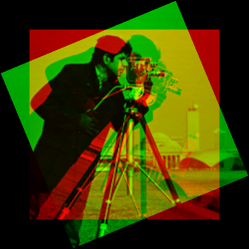

Arrays: more advanced indexing
In addition to the handling of numbers and colors, one of the main ways that JuliaImages leverages Julia is through a number of more sophisticated indexing operations. These are perhaps best illustrated with examples.
Keeping track of location with unconventional indices
(Note: this depends on the not-yet-integrated ImageTransformations.jl)
Consider the following pair of images:
| col | col |
|---|---|
 |  |
You might guess that the one on the right is a rotated version of the one on the left. But, what is the angle? Is there also a translation?
A "low tech" way to test this is to rotate and shift the image on the right until it seems aligned with the one on the left. We could overlay the two images (Using colorview to make color overlays) to see how well we're doing.
# Define the transformation, using CoordinateTransformations
# We're rotating around the center of img
julia> tfm = recenter(RotMatrix(pi/8), center(img))
AffineMap([0.92388 -0.382683; 0.382683 0.92388], [88.7786,-59.3199])
# Apply it to the image
julia> imgrot = warp(img, tfm);
julia> summary(img)
"386×386 Array{Gray{N0f8},2}"
julia> summary(imgrot)
"-59:446×-59:446 OffsetArray{Gray{Float64},2}"While img has indices that start with the conventional 1, the summary of imgrot reports that it has indices (-59:446, -59:446). This means that the first element of imgrot is indexed with imgrot[-59,-59] and the last element with imgrot[446,446].
What is the meaning of these indices that extend beyond those of the original array in both directions? Displaying the rotated image–-especially when overlaid on the original–-reveals why:
# Create a padded version of the original with the same indices as imgrot
julia> img0 = similar(imgrot);
julia> fill!(img0, 0);
# Copy the original image into the same index location
julia> img0[1:386, 1:386] = img; # or write as img0[indices(img)...] = img
# Create the overlay
julia> imgov = colorview(RGB, img0, imgrot, zeroarray)
The padding on all sides of the array leaves space for the fact that the rotated image (green) contains some pixels out of the region covered by the original image (red). The fact that Julia allows these indices to be negative means that we have no trouble adding appropriate "padding" to the original image: we just copy the original over to the padded array, using its original indices.
We can test whether this rotation aligns well with the original unrotated image at the top of this page:
julia> img0[indices(imgref)...] = imgref; # imgref is the image on the left, top of page
julia> imgov = colorview(RGB, img0, imgrot, zeroarray);
The fact that the overlapping portion looks yellow–-the combination of red and green–-indicates that we have perfect alignment.
You can learn more about Julia's support for arbitrary indices at ??. (to be written)
Keeping track of orientation with named axes
Suppose you are presented with a 3-dimensional grayscale image. Is this a movie (2d over time), or a 3d image (x, y, and z)? In such situations, one of the best ways to keep yourself oriented is by naming the axes.
julia> using Images, TestImages
julia> img = testimage("mri");
# Create a "labeled image"
julia> imgl = AxisArray(img, :A, :R, :S)
3-dimensional AxisArray{ColorTypes.Gray{FixedPointNumbers.UFixed{UInt8,8}},3,...} with axes:
:A, Base.OneTo(226)
:R, Base.OneTo(186)
:S, Base.OneTo(27)
And data, a 226×186×27 Array{ColorTypes.Gray{FixedPointNumbers.UFixed{UInt8,8}},3}:
[:, :, 1] =
Gray{U8}(0.0) Gray{U8}(0.0) Gray{U8}(0.0) Gray{U8}(0.0) … Gray{U8}(0.0) Gray{U8}(0.0) Gray{U8}(0.0) Gray{U8}(0.0)
Gray{U8}(0.0) Gray{U8}(0.0) Gray{U8}(0.0) Gray{U8}(0.0) Gray{U8}(0.0) Gray{U8}(0.0) Gray{U8}(0.0) Gray{U8}(0.0)
...Here we used the AxisArrays package to name our axes in terms of the RAS coordinate system (Right, Anterior, Superior) as commonly used in magnetic resonance imaging.
We can use this coordinate system to help with visualization. Let's look at a "horizontal slice," one perpendicular to the superior-inferior axis (i.e., a slice with constant S value):

From the summary you can see that the slice has just the :A and :R axes remaining.
We could slice along the R and A axes too, although for this image (which is sampled very anisotropically) they are not as informative.
The ImageAxes and ImageMetadata packages add additional functionality to AxisArrays that may be useful when you need to encode more information about your image.